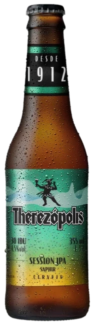
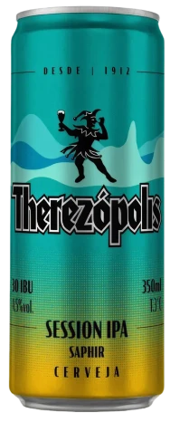

É tempo de Therê
Role e descubra
Saphir
session ipa
UM CLÁSSICO TROPICAL?
DESCE UMA SESSION.
A Session IPA da Therezópolis traz a intensidade aromática dos lúpulos com um amargor suave e refrescante, perfeito para os dias quentes, ou para os dias em que você só quer algo mais fácil de beber.
Com 4,5% de teor alcoólico, ela tem corpo leve, final seco e notas cítricas marcantes, que conquistam logo no primeiro gole. Uma cerveja para aproveitar com os amigos, com a brisa, com aquele som bom de fundo. E o melhor: cabe em qualquer estação do ano.
Combina com:
Essa Session leve e aromática harmoniza com peixe grelhado, frango assado, carnes na brasa, queijos semiduros e os petiscos que você mais curte. Vai bem com tudo, menos com pressa.
é tempo de
therêzópolis
saphir
medalha de prata
World Beer Awards
2025
A Therezópolis Saphir (a Session IPA da marca) ganhou a Medalha de Prata no World Beer Awards.
Ela se destaca pela coloração amarelo-alaranjada, teor alcoólico refrescante de 4,5% ABV, amargor moderado e notas intensas de lúpulo que remetem a frutas tropicais e resina de pinho.
